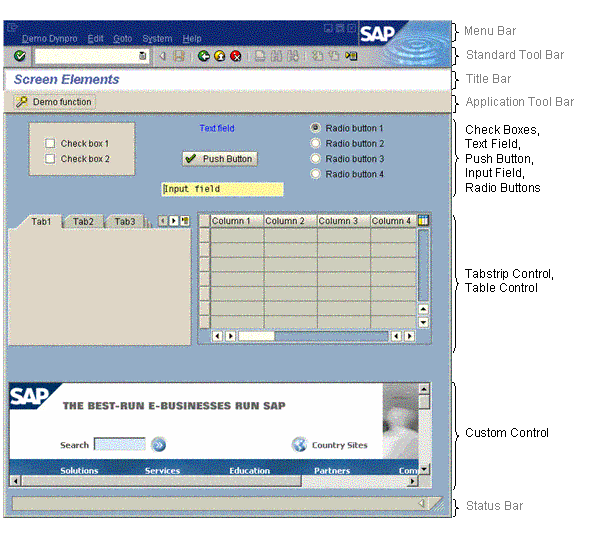

AS ABAP Release 754, ©Copyright 2019 SAP SE. All rights reserved.
ABAP Keyword Documentation → ABAP − Reference → SAP GUI User Dialogs → General Dynpros →Screen and Screen Elements
The screen of a dynpro is created in the Layout Editor of the Screen Painter. The screen of the program DEMO_DYNPRO contains all possible screen elements. Above the screen, the menu bar, standard toolbar, title bar, and the application toolbar can be seen, with the status bar at the bottom.
